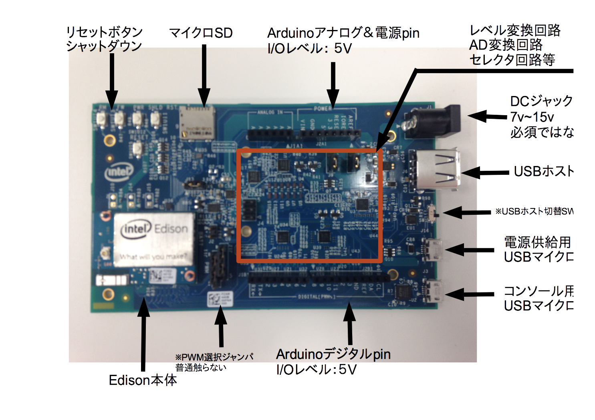

Edison ハードウェアについて (Arduino 編)¶


1.初めに¶
僕個人的には、BreackBordの方が好きですが、やっぱりArduino版Edisonの開発で困っている方もいらっしゃるので、まとめてみたいと思う。
なお、ここではEdison版ArduinoIDEの説明を省略します。（そのうち書くかも） というのも、Edisonの開発はなるべくLinux上で行うことで、Edisonの可能性を最大限感じつ頃ができるという気持ちなので、ご了承ください。
2. Arduino基板の表面について¶
基本的には、図のマイクロUSBの箇所に２本接続して開発します。
どうしてもUSBを使いたくない際は、電源をDCジャックから供給しても行けます。
マイクロUSBとDCジャックの電源を両方つける必要はないです。結局どちらも５Vにされます。
3. Arduino版Edisonの開発方法¶
さて、早速Arduino版Edisonの開発方法をまとめます。
- まず初めに、マイクロUSBケーブルを２本用意します。Arduino版EdisonにはDCジャックが付いておりますが、使わなくても開発できます。DCジャックについては後述します。
- ２本のUSBをパソコンに接続します。基板にLEDがつけばOK
- WindowsであればTera Termを開き、COMポートを選択し、通信速度を115200bpsに設定します。
- MacやLinuxであればscreen /dev/tty.usb〜 から始まるターミナルに115200で開きます。
- ターミナルが無事に開いたら、スタートラインに到着です。
- 最新のFWに設定するために http://nonnoise.github.io/Edison/init.html を行います。
- そのあとは、コマンドで色々開発します。
3. Arduino版Edisonのピンに関して¶
この間ハッカソンでEdisonの開発を手伝いましたが、Arduino版Edisonは少し癖がありそうでしたのでまとめました。
ライブラリ mraa を使う際に、IOの選択は全てArduinoのIOの番号で接続できます。
例えば、Arduino端子の13ピンをON/OFFするPythonソースは、
import mraa
import time
print (mraa.getVersion())
x = mraa.Gpio(13) # Arduino 13pin
x.dir(mraa.DIR_OUT)
while 1 :
x.write(1) #ON
time.sleep(1)
x.write(0) #OFF
time.sleep(1)
といった形になります。
なので、たとえばArduonoの2pinにアクセスする際は、
x = mraa.Gpio(2)
といった形になります。

{kind=link}
管理情報¶
| 初版: | 2014/10/30 |
|---|---|
| 作成者: | Yuta kitagami |
| 連絡先: | kitagami@artifactnoise.com |
| twitter: | @nonNoise |